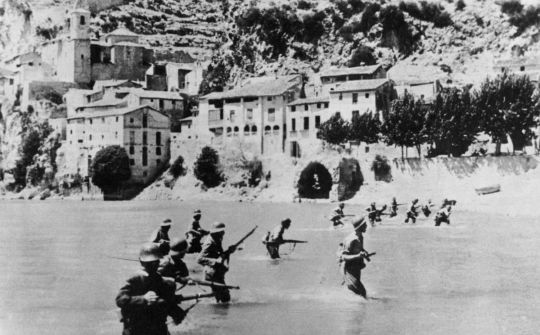

Het dorp Miravet en haar kasteel is origineel gebouwd door de moren. Toen een groep ridders "tempelieren" het hadden overgenomen in 1153 hebben ze het omgebouwd in een veel groter en sterker kasteel. Het wordt beschouwd als het grootste kasteel in Catalunya en het beste voorbeeld van Tempeliers architectuur.
In pottenbakkersdorp wandel je letterlijk door de geschiedenis. Door de strategische ligging aan de Ebro, werd hier door de eeuwen heen veel gevochten. De grootste slachtpartij vond plaats tijdens de Spaanse Burgeroorlog, in 1936.
Tijdens deze zogeheten La batalla del Ebro stierven ruim 100.000 mensen. Een slag die werd gewonnen door de aanhangers van de Spaanse dictator Franco. 